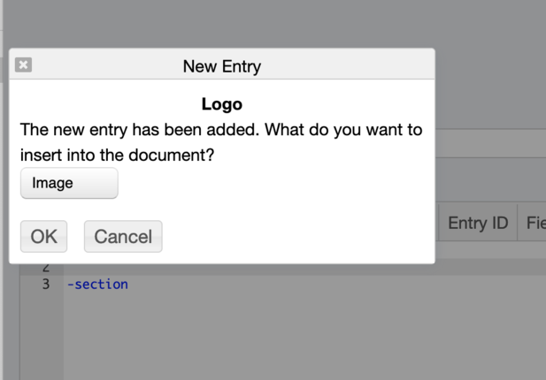

When creating a new entry or creating a thumbnail metadata the below form is shown that supports
selecting a file or drag-and-dropping a file. You can also paste an image or text into the "Or drag files here" area.
The wiki editor supports drag-and-drop of files. The file is uploaded to the RAMADDA server and a new
entry is created. The user is then asked what should be embedded in the wiki text, e.g.: as an
image:
Image 2: Drag and drop
The wiki editor also supports pasting an image that has been copied to the clipboard (e.g., through a screen grab). A new image entry is created and the above dialog is shown.
There is a new wiki display component that supports searching within a page.
This can be seen in the
Maps Gallery
Add this to a page with:
{{display_simplesearch doPageSearch=true placeholder="Search in page"}}
This supports grid, gallery and entry tree/table displays.
By default RAMADDA serves up all of its HTML resources (javascript, css, images etc)
from its own server. However, for performance, RAMADDA can be configured to use
external content delivery networks (CDN) by setting this property:
ramadda.cdnok=true
For the core resources RAMADDA uses cdn.jsdeliver.net using the latest Github version tag, e.g.:
https://cdn.jsdelivr.net/gh/geodesystems/ramadda@6.60.0/...
For other resources RAMADDA uses the standard CDN for the resource, e.g.:
https://code.jquery.com/jquery-3.3.1.min.js
RAMADDA supports embedding Github checkins into wiki text with the form:
@(github user=some_user_name)
or:
@(github owner=repository_owner repository=repository)
The access to the Github API is rate limited. To increase the request rate create a personal access
token through Github and set the following RAMADDA property:
github.token=your token
Install the
Ghostscript
package to automatically generate a thumbnail image of the the page of a PDF file by
setting the property:
service.gs=/path/to/bin/gs
In wiki text add the below to provide a full screen mode. When mousing over the
component an icon
is shown
in the upper right.
+fullscreen
Anything here...
-fullscreen
RAMADDA supports a Jupyter Notebook entry type. It will do its own custom rendering
of the notebook. You can also configure RAMADDA to use jupyter to do the rendering
by setting the following property value:
ramadda.jupyter.path=/path/to/anaconda/bin/jupyter
There are a number of other services that access external APIs and require
an API key. Here are some of them.
#show google streetview images
google.streetview.key=
#for google geocoding
google.key=
#for enabling sms access
twilio.accountsid=
twilio.authtoken=
twilio.phone=
#for census data access
census.api.key=
#bureau of labor statistics
bls.api.key=
#fec
fec.api.key=
#used in the GTFS displays
ramadda.uber.token=
ramadda.lyft.clientid=
ramadda.lyft.secret=
#other...
quandl.api.key=
webhose.api.key=
enigma.api.key=
wolfram.api.key=
{kind=link}
{kind=link}
{kind=link}